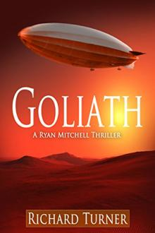
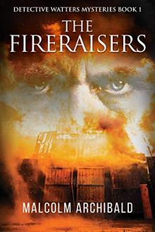
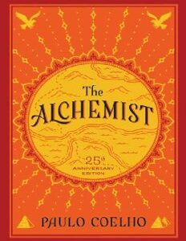

Bronze Magic

Jennifer Ealey
This magic attribute allows the user to generate and manipulate bronze at will. The users are able to use this magic without the need of a grimoire. However, in order to use it to its full potential, specific spells are required, which are stored within grimoires.
The Swordsman

Malcolm Archibald
After her homeland of Alba comes under attack by an invading horde, Melcorka abandons her life of luxury and chooses the path of a warrior, and sets off to free the land from the scourge of the Norsemen.
Goliath

Richard Turner
In the summer of 1931, the British Airship Goliath on her maiden flight vanishes without a trace over West Africa, taking with her a secret that people are willing to kill and die for.
The Call of the Wild

Jack London
The Call of the Wild is a tale about unbreakable spirit and the fight for survival in the frozen Alaskan Klondike.
Mystic Pieces

Ada Bell
Future scientists don't have visions. Aly's got enough on her plate, with finishing her degree and taking care of her nephew and starting her new job at the antique store while drooling over the owner's gorgeous son. No visions
The Fireraisers

Malcolm Archibald
Dundee, Scotland, 1862. After the mill of businessman Matthew Beaumont burns to the ground, Detective Sergeant George Watters is sent to investigate.
The Alchemist

Paulo Coehlo
Combining magic, mysticism, wisdom and wonder into an inspiring tale of self-discovery, The Alchemist has become a modern classic, selling millions of copies around the world and transforming the lives of countless readers across generations.
After Dark

Wilkie Collins
The book is a series of tales supposed to be told to poor travelling portrait-painter, William Kerby, who is forced to abandon his profession for six months in order to save his sight.